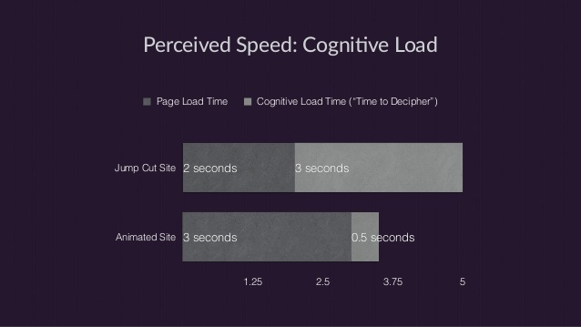
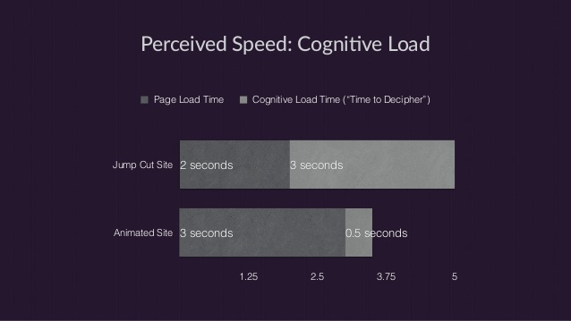

Animation is the process of making the illusion of motion and the illusion of change
Why is the animation important to UI & UX?
Animations can provide feedback and visibility of the system status.
 Guided focus between views
Improve the recognition of the actions applied to the object
Reduce the cognitive Load

Distraction from what’s happening behind the scenes (like fetching content or loading the next view)
Guided focus between views
Improve the recognition of the actions applied to the object
Reduce the cognitive Load

Distraction from what’s happening behind the scenes (like fetching content or loading the next view)
 Calls atention to something in the view
Doing CSS Transitions and Animations
Transitions in CSS3
Calls atention to something in the view
Doing CSS Transitions and Animations
Transitions in CSS3
left: 0;
transform: rotate(0deg);
-webkit-transition: 1s;
left: 600px;
transform: rotate(360deg);
-webkit-transition: 1s;
Animations in CSS3
.move {animation: anim2 ease-in-out 3s infinite alternate; }
@keyframes anim2
{
from {left: 0px; transform: scale(1.0) rotate(0deg) }
50% {left: 250px; transform: scale(0.8) rotate(10deg) }
to {left: 500px; transform: scale(1.2) rotate(-20deg) }
}
2D geometric forms in CSS3
transform: rotate(0deg, 0deg)
transform: scale(0)
transform: skew(0deg, 0deg)
1. CSS3 Transitions
-webkit-transition:
-webkit-transition-delay:
-webkit-transition-duration:
-webkit-transition-timing-function:
-webkit-transition-property:
2. CSS3 Animations
-webkit-animation:
-webkit-animation-delay / duration / timing-function:
-webkit-animation-name: foo => @keyframes foo { from {} to {}}
-webkit-animation-direction:
-webkit-animation-fill-mode:
-webkit-animation-iteration-count:
3. CSS3 Transforms in 2D
-webkit-transform: rotate / scale / skew / translate / matrix
3D geometric Transforms
translateX, Y, Z, rotateX, Y, Z, matrix3d
-webkit-transform: translateZ(150px) /* first picture */
-webkit-transform: translateZ(-150px) /* second picture */
-webkit-transform: rotateY(360deg) /* their container */
.SCENE {
-webkit-perspective: 1000px;
width: 600px;
height: 340px;
}
.OBJECT {
-webkit-transform-style: preserve-3d;
-webkit-transform: rotateX(0deg) rotateY(0deg) rotateZ(0deg);
position: absolute;
width: 100%;
height: 100%;
}
.FACE {
position: absolute;
left: 165px;
top: 15px;
}
.FACE.im1 { -webkit-transform: translateZ(150px); }
.FACE.im2 { -webkit-transform: translateZ(-150px); }
.FACE.im3 { -webkit-transform: translateX(150px) rotateY(90deg);}
.FACE.im4 { -webkit-transform: translateX(-150px) rotateY(-90deg);}
.FACE.im5 { -webkit-transform: translateY(150px) rotateX(90deg);}
.FACE.im6 { -webkit-transform: translateY(-150px) rotateX(-90deg);}
- https://www.nngroup.com/articles/minimize-cognitive-load/
- https://www.slideshare.net/CrowChick/animation-and-the-future-of-ux-33573726
- https://material.io/guidelines/motion/material-motion.html#
- https://medium.com/lateral-view/why-is-motion-design-so-important-to-user-experience-50110ba4b5e1
- https://medium.com/ux-in-motion/creating-usability-with-motion-the-ux-in-motion-manifesto-a87a4584ddc